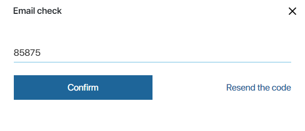

Чтобы повысить защиту данных, задайте необходимые требования для входа пользователей в систему. Для этого перейдите в раздел Администрирование > Настройки безопасности.
Здесь вы можете:
- указать минимальную длину пароля, его сложность и периодичность смены;
- ограничить количество попыток входа и настроить блокировку пользователей;
- использовать двухфакторную аутентификацию;
- настроить аутентификацию по номеру телефона;
- включить завершение сессии пользователей в случае бездействия;
- ограничить доступ к загрузке файла для неавторизованного пользователя.
начало внимание
Изменять Настройки безопасности могут только пользователи, входящие в группу Администраторы.
конец внимание
Политика паролей
Настройки, заданные в этом блоке, применяются:
- при авторизации в системе и восстановлении пароля для внутренних пользователей;
- при входе внешних пользователей на портал.
Вы можете регулировать надёжность паролей как внутренних, так и внешних пользователей, а также задать настройки блокировки при неудачных попытках входа в систему или на портал.

В настройках безопасности доступны следующие опции:
- Минимальная длина пароля — установите длину пароля для входа в систему. Если пароль не будет соответствовать требованиям, при попытке авторизоваться пользователь увидит уведомление об этом;
- Использовать сложный пароль — включите эту опцию для обязательного использования в пароле букв верхнего и нижнего регистра, цифр и спецсимволов, например, знаков !#+,= и т. д. Если пароль не будет соответствовать требованиям, при попытке авторизоваться пользователь увидит уведомление об этом;
- Лимит попыток неудачного входа — установите количество попыток входа, после которого вход для пользователя будет заблокирован, и он не сможет авторизоваться. Значение 0 выключает настройку;
- Период сброса счетчика неудачных попыток в минутах — задайте интервал, после которого счётчик попыток неудачного входа сбросится. Если установленный лимит попыток не превышен, по истечении этого времени попытки будут считаться заново. Вход для пользователя не будет заблокирован.
Например, вы поставили значение 3 в поле лимита попыток входа и 1 в периоде сброса счётчика. Если пользователь введёт неверный пароль трижды, по истечении 1 минуты у него снова будет 3 попытки входа в систему.
При значении 0 счётчик не сбрасывается, при использовании лимита попыток будет заблокирован вход для пользователя.
- Продолжительность блокировки в минутах — установите время, в течение которого пользователю будет заблокирована возможность авторизоваться в системе, если он превысит лимит попыток неудачного входа. При этом статус пользователя останется Активный, однако в его профиле будет стоять отметка Вход заблокирован. По истечении времени блокировки вход можно повторить.
При установленном значении 0 разблокировать вход для пользователя смогут только администраторы системы, открыв карточку сотрудника:
- в разделе Администрирование > Пользователи для внутреннего пользователя;
- в разделе Системные справочники > Внешние пользователи для внешнего пользователя;
- Уведомляемые о блокировке группы пользователей — укажите группы пользователей, которые получат оповещение в #ленту о блокировке входа для пользователя;
- Периодичность смены пароля в днях — определите, как часто пользователи должны будут обновлять свой пароль для входа в систему. Значение 0 выключает настройку;
- Интервал повтора отправки письма в днях — задайте период отправки пользователю писем с напоминанием о смене пароля. Если значение опции 0, то письмо будет отправлено один раз без повторов. После смены пароля отправка писем прекращается автоматически;
- Эскалация — выберите, блокировать или нет вход пользователя до смены пароля;
- Запретить восстановление пароля — включите опцию, чтобы не показывать ссылку Восстановить пароль на странице авторизации в системе. При активной опции пользователи не смогут восстановить пароль. Обратите внимание, для внешнего пользователя восстановление пароля задаётся в настройках портала.
Внешние провайдеры аутентификации
По умолчанию авторизация пользователей в ELMA365 осуществляется по логину и паролю. При настроенном пользовательском модуле OAuth2 или активной интеграции с SAML вы можете разрешить пользователям входить в систему с помощью данных от учётной записи определённого стороннего сервиса.

Разрешить OAuth2 аутентификацию — отметьте опцию, чтобы пользователи могли войти в ELMA365, используя данные от учётной записи стороннего сервиса OAuth2.
Провайдеры OAuth2 — укажите подключённого провайдера, с помощью которого пользователи смогут авторизоваться в системе. Если поле не заполнено, войти в систему смогут пользователи со всех настроенных провайдеров OAuth2.
Разрешить SAML аутентификацию — отметьте опцию, чтобы пользователи могли авторизоваться в системе с помощью данных от учётной записи SAML.
Провайдеры SAML — выберите настроенную интеграцию с сервисом SAML. Если интеграция не выбрана, в системе смогут авторизоваться пользователи из всех подключённых серверов SAML.
Способ аутентификации по умолчанию — выберите используемый способ аутентификации. Он определяет, как будет выглядеть страница входа в ELMA365:
- Внутренний (логин / пароль) — предпочтительным является вход с помощью логина и пароля ELMA365. Пользователь увидит стандартное окно входа в систему. Для авторизации через сторонний сервис нужно нажать кнопку Войти другим способом и ввести данные;
- Внешний — предпочтительным считается вход через внешний сервис авторизации. Пользователь увидит окно, в котором можно выбрать один из доступных сервисов. Список включает провайдеров, для которых в системе настроен модуль OAuth2. Также пользователь сможет нажать Войти по логину / паролю, чтобы авторизоваться с помощью учётных данных ELMA365;
- Сквозная авторизация — пользователь сразу перенаправляется на страницу авторизации провайдера. Если он уже авторизовался, вводить данные для входа повторно не нужно. Обратите внимание, войти с учётными данными ELMA365 в этом случае нельзя. Опция доступна, если выполнены следующие условия:
- включена только OAuth2‑аутентификация или только SAML‑аутентификация;
- добавлен только один провайдер для аутентификации;
- включён фича-флаг на сервере. Для его активации обратитесь в техподдержку ELMA365.
Двухфакторная аутентификация
Вы можете настроить дополнительную проверку внутренних пользователей при авторизации в системе. Это позволит убедиться, что учётной записью воспользовался именно ваш сотрудник.
Двухфакторная аутентификация будет распространяться не только на пользователей, созданных вручную, но и на импортированных из AD/LDAP или созданных автоматически с помощью провайдера SAML.

Выполните настройки:
- Выберите Тип второго фактора аутентификации:
- SMS — для входа пользователю потребуется ввести логин, пароль и индивидуальный код из SMS. Код высылается на телефон, указанный в профиле пользователя в поле Сотовый. Если это поле не заполнено, пользователь войдёт в систему только по логину и паролю.
начало внимание
Если провайдера нет в списке, убедитесь, что для него включён и настроен модуль интеграции.
конец внимание
- Email — для входа пользователю необходимо ввести логин, пароль и индивидуальный код из письма. Письмо высылается на почту, указанную пользователем при регистрации в системе.
Важно: в ELMA365 Оn-Premises код авторизации отправляется через SMTP-сервер, заданный при установке системы.
- Пользовательский модуль — для входа пользователю потребуется ввести логин, пароль и индивидуальный код. Он высылается в аккаунт стороннего сервиса, указанный в профиле пользователя в поле Учетные записи. Если это поле не заполнено, пользователь войдёт в систему только по логину и паролю.
- Модуль* — выберите провайдера для отправки кода авторизации. Если опции нет в списке, убедитесь, что для него включён и настроен пользовательский модуль для двухфакторной аутентификации.
- Нажмите Сохранить. Вам будет выслан код для проверки подключения к сервису. В зависимости от выбранного типа второго фактора, код отправляется на почту, по SMS или в аккаунт стороннего сервиса.
- В открывшемся окне введите полученный код и нажмите Подтвердить.

Обратите внимание, если вы закроете окно проверки или введёте неверный код, настройки не сохранятся.
Расширенные возможности аутентификации
Пользователи могут получать приглашения в ELMA365, авторизовываться и восстанавливать свой пароль, используя номер телефона из своего профиля вместо логина.
Для этого необходимо настроить модуль SMSЦентр или SMSRU, а также включить аутентификацию по номеру телефона.
При этом авторизация через логин, AD/LDAP, SAML и OAuth, а также восстановление пароля и приглашение пользователей через электронную почту останутся доступными.

Для включения аутентификации по номеру, выполните следующие настройки:
- Разрешить аутентификацию по номеру телефона — отметьте опцию, чтобы включить авторизацию и приглашение пользователей, а также восстановление пароля по номеру телефона;
- Использовать одноразовые коды для аутентификации — отметьте опцию, чтобы пользователи могли авторизоваться в ELMA365 с помощью одноразового проверочного кода без ввода пароля от системы;
- Тип провайдера одноразовых кодов — в данный момент для выбора доступен только тип SMS;
- Провайдер одноразовых кодов — выберите из раскрывающегося списка настроенный модуль отправки SMS. Выбранный провайдер будет осуществлять отправку одноразовых кодов для входа, приглашений, восстановления пароля, а также сохранения расширенных возможностей аутентификации.
Нажмите кнопку Сохранить. На ваш номер будет выслан код для проверки подключения к сервису.
В открывшемся окне введите полученный код и нажмите Подтвердить.
При сохранении настроек в системе проверяется уникальность номеров всех пользователей. Если найдены пользователи без номера или с одинаковыми номерами, откроется окно с сообщением. Сохранить настройки можно только после решения проблем.
Когда вы включите аутентификацию по мобильному телефону, в системе произойдут следующие изменения:
- поле Эл. почта на форме приглашения пользователя и в настройках профиля становится необязательным и редактируемым;
- поле Сотовый на форме приглашения пользователя и в настройках профиля становится обязательным для заполнения. Изменить номер можно, если у пользователя указан адрес электронной почты;
- номера мобильных телефонов пользователей проверяются на уникальность;
- изменяется страница авторизации. Если включена отправка одноразовых кодов, пользователь увидит поле для ввода номера и кнопку Получить код. При таком способе авторизации двухфакторная аутентификация будет неактивна;
- пользователи, импортированные из AD/LDAP, смогут авторизоваться в системе с помощью одноразового кода.
Для авторизации по логину и паролю пользователю необходимо нажать Войти другим способом. В этом случае будет активна двухфакторная аутентификация, если она настроена.
Сессии пользователей
Вы можете:
- Завершать сессии пользователей при бездействии — включите опцию и укажите время бездействия пользователя в системе. Если оно истекло, сессия завершится автоматически. Чтобы продолжить работу, пользователю нужно заново авторизоваться, независимо от типа лицензии;
- Ограничить параллельные сессии — включите опцию и укажите допустимое количество устройств, на которых пользователь может авторизоваться одновременно. Если оно превышено, при попытке авторизоваться в системе ещё на одном устройстве, отобразится сообщение об этом. Новая сессия не создаётся до тех пор, пока пользователь не выйдет из системы на другом устройстве. Ограничение применимо к любым методам авторизации: логин и пароль, AD/LDAP, SAML, OAuth2. Например, если допустимы две параллельные сессии, пользователь успешно может войти в систему в браузере Chrome и в мобильном приложении. После этого при попытке войти в систему в браузере Firefox после проверки логина и пароля отобразится ошибка.
начало внимание
Для редакции SaaS Enterprise и поставки On-Premises настройки сессий доступны, если активировано решение ELMA365 Advanced Security Pack.
конец внимание

Защита файлов
Если кто-то пытается загрузить файл из ELMA365 по прямой ссылке, можно проверять, авторизован пользователь в системе и есть у него доступ к файлу или нет.
Чтобы включить эту функцию:
- в редакции SaaS Standard — опция доступна по умолчанию, но требует дополнительной настройки. Обратитесь в техподдержку ELMA365;
- в редакции SaaS Enterprise и поставке On-Premises — включите защиту файлов в настройках безопасности. Опция доступна, если активировано решение ELMA365 Advanced Security Pack. Также в поставке On-Premises должна быть настроена работа по HTTPS.